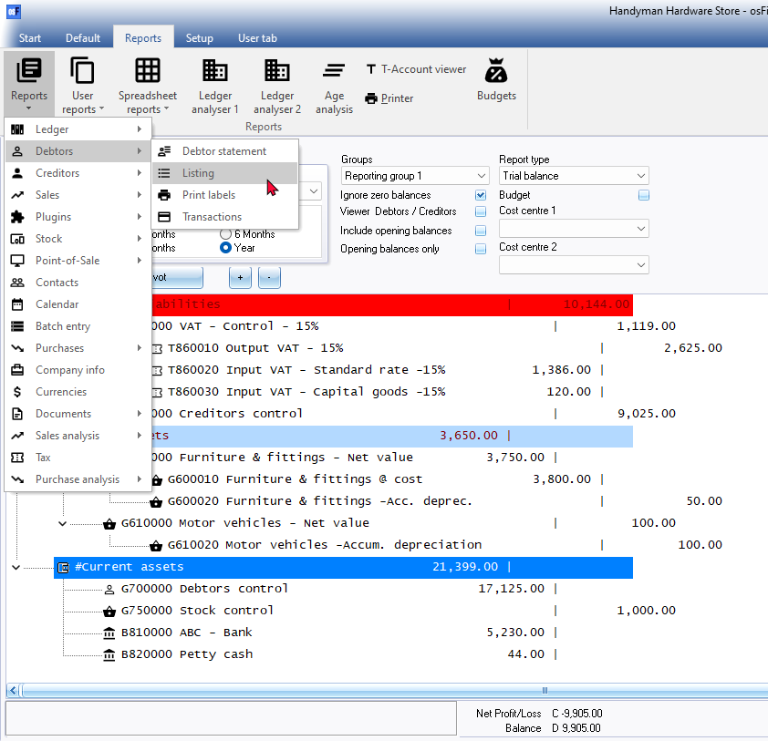
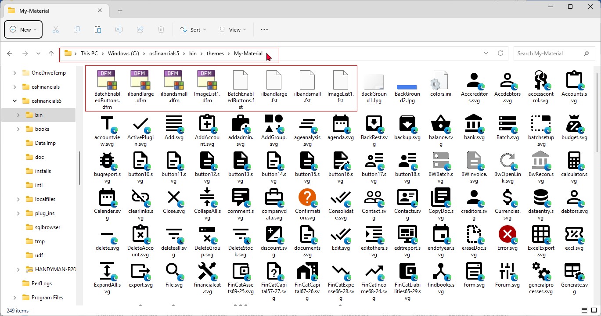
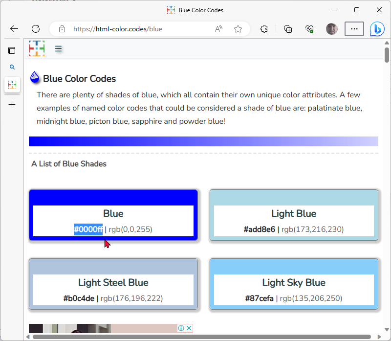
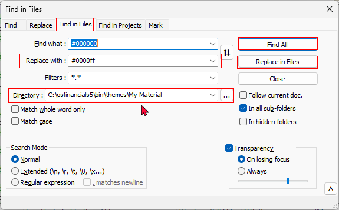
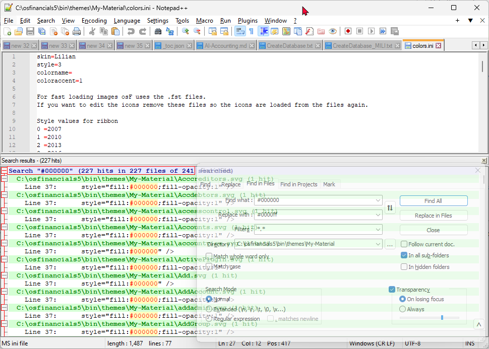
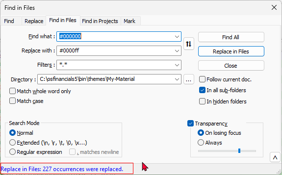
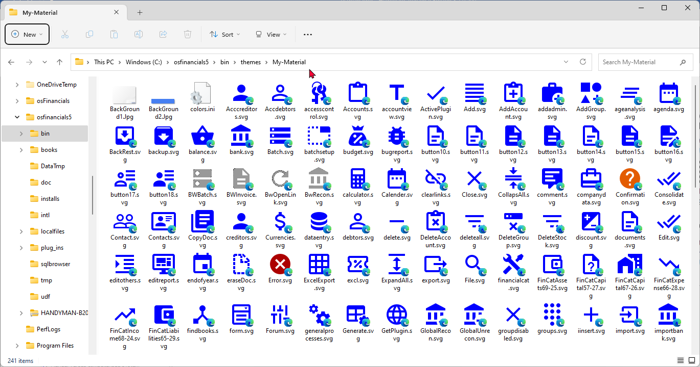
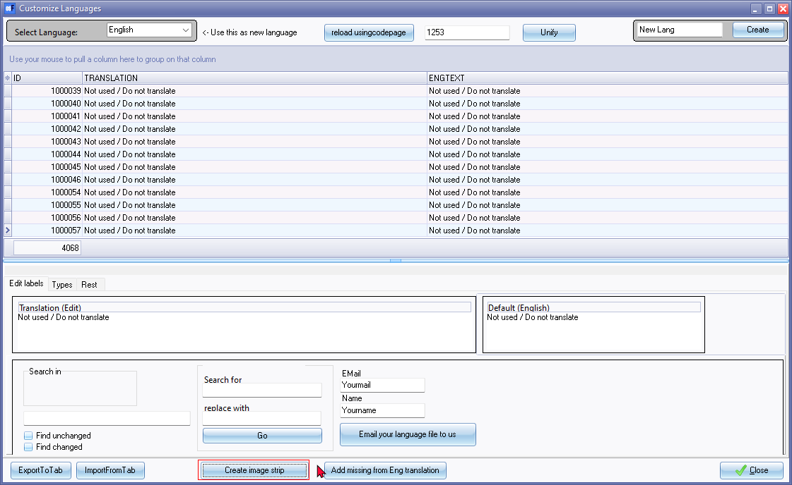

Themes - New theme -change icon colours at one go
In osFinancials5, you have the option to easily customize the colour of all 227 icons (in the SVG "Scalable Vector Graphics" file format) used in the interface. This customization process can be completed in less than a minute by utilizing a text editor such as Notepad++ and the Search and Replace feature. By replacing the default black colour with a colour of your preference, you can personalize the appearance of the icons in the "Material" theme to suit your taste.
|
|
If you opt for the "Blue, Glass, Silver," or "Soft-blue" theme in osFinancials5, you will encounter a set of icons resembling those found in the Material theme, but featuring a navy-blue colour palette. These themes offer an alternative visual presentation with cohesive icons, enabling you to personalize the interface by selecting a different theme from the Theme menu on the Setup ribbon. |

Process to customise the colour of icons - Overview
An overview of the process to customize the colour of icons in the osFinancials5 interface:
- Start by creating a copy of the "Material" theme folder located in the ".../bin/themes" folder of your osFinancials5 installation directory.
- Rename the copied folder to your desired theme name, replacing "Material - Copy" with your chosen name.
- Within your new theme folder, delete the eight files responsible for loading the images (icons). These files will be recreated during the final step of the icon customization process (See step 6).
- Use a program editor like Notepad++ to open the files in your new theme folder. Look for the hexadecimal colour code "#000000" (representing black) and replace it with the hexadecimal colour code of your choice. This will update the colour of the icons to your preferred colour.
- Launch osFinancials5 and navigate to the Setup ribbon. Select your newly created theme from the Theme menu.
- Lastly, it is important to create a new image strip loader. Go to Tools → Customise language on the Setup ribbon and follow the instructions to create the new image strip loader.
By following these steps, you can enjoy a customised set of coloured icons in the osFinancials5 interface, reflecting your chosen theme and colour scheme.
Process to customize the colour of icons - Detailed steps
The process is as follows:
The black colour icons is displayed in the osFinancials5 interface when the default "Material" theme is selected.

Close osFinancials5.
In your File explorer, navigate to the ".../bin/themes" folder of your osFinancials5 installation directory.
Select the "Material" theme and create a copy of the folder. It should create a new folder "Material - Copy" folder.
Rename that folder to for your own name., e.g. "My-Material".
In your new theme folder, you may wish to change the view settings to View → Medium icons and set the Sort by → Type file type options
Delete the following eight (8) files (4 *.dfm file types: BatchEnabledButtons.dfm, ilbandlarge.dfm, ilbandsmall.dfm, ImageList1.dfm, and 4 *.fst file types: BatchEnabledButtons.fst, ilbandlarge.fst, ilbandsmall.fst, ImageList1.fst). Note in the "Colors.ini" file.
"For fast loading images osF uses the .fst files.
If you want to edit the icons remove these files so the icons are loaded from the files again."
Once you have completed changes to your icons, you will need to create an image strip to recreate the deleted files.

Open your Notepad editor - In this example Notepad++ is selected to replace the black colour ("#000000 Color Hex Black") hook in all 227 icon files to the colour of your choice in a few seconds. You may open the "Colors.ini" file in your theme folder as in this example with Notepad++
In Notepad++, go to "Search -> Replace"
Click on the Find in Files tab
Select your the of your new theme folder (e.g. "My-Material").
In the "Find what :" field enter the hex value for black colour, i.e. "#000000"
In the "Replace with :" field enter the hex value for the colour of your choice. In this example, the hex value for blue colour, i.e. "#0000ff" is selected.


Click on the Find All button to check the number of files to be changed. This should list 227 icon files with the *.svg file extension.

Click on the Replace in Files button. This will replace all of the 227 icon files in one shot.

When you open your new theme folder in your file explorer, all the of the 227 icon files will be displayed in the new colour as your chosen colour. In this example, blue was used. 
|
|
Please note that certain icons in the osFinancials interface will remain unchanged to ensure their visibility and distinctiveness. These include:
These icons are intentionally retained in their original form and colour to maintain their specific purpose and recognition within the osFinancials interface. |

Once the themes is changed, and displays the correct colour for your liking, you may start osFinancials5 and select your new theme for example"My-Material" in the Theme menu on the Setup ribbon.
Your new colour icons should display at this stage, in the osFinancials interface.

The last important step to do, is to create an image strip. To do this, select Tools → Customise language on the Setup ribbon and click on the Create image strip button.

A message will be displayed:
"Creating new image strip loader"
Click OK.
Close the "Customize Languages" screen.
After completing these steps, the eight deleted files (4 *.dfm file types: BatchEnabledButtons.dfm, ilbandlarge.dfm, ilbandsmall.dfm, ImageList1.dfm, and 4 *.fst file types: BatchEnabledButtons.fst, ilbandlarge.fst, ilbandsmall.fst, ImageList1.fst) will be recreated.